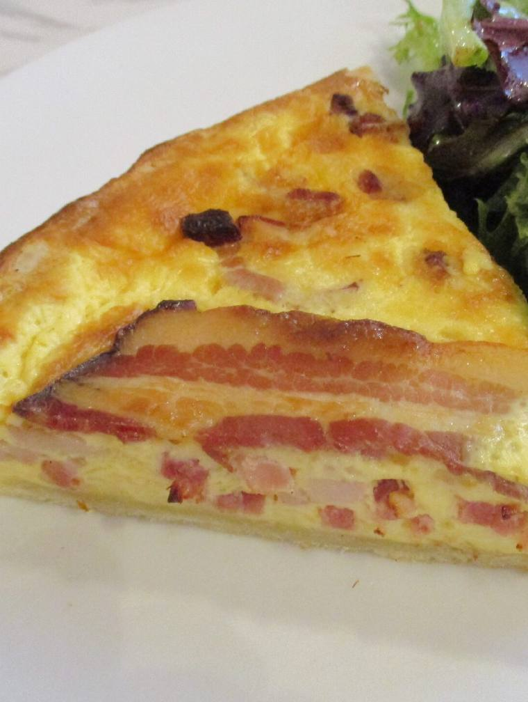

Cuisine française

Cuisine française
Quiche lorraine
Préparation : 20 min
Cuisson : 40 min
Ingrédients (pour 6 personnes)
- 250 g de pâte brisée
- 200 g de lardons fumés
- 4 œufs
- 300 g de crème fraîche épaisse
- poivre, muscade, très peu de sel
Quantités adaptées. Les temps de cuisson ne sont pas recalculés.
- Préchauffer le four à 180 °C. Foncer un moule de 26 cm, piquer la pâte.
- Faire revenir les lardons quelques minutes, les répartir sur la pâte.
- Battre œufs et crème (la migaine), assaisonner, verser.
- Cuire 30 à 40 minutes, jusqu’à ce que le dessus soit doré.
AstuceNi fromage ni oignon dans la vraie lorraine.
D’après la méthode de Raphaël Haumont, Allo Docteurs. Fromage retiré, selon la tradition lorraine. Grammages précisés par nos soins.